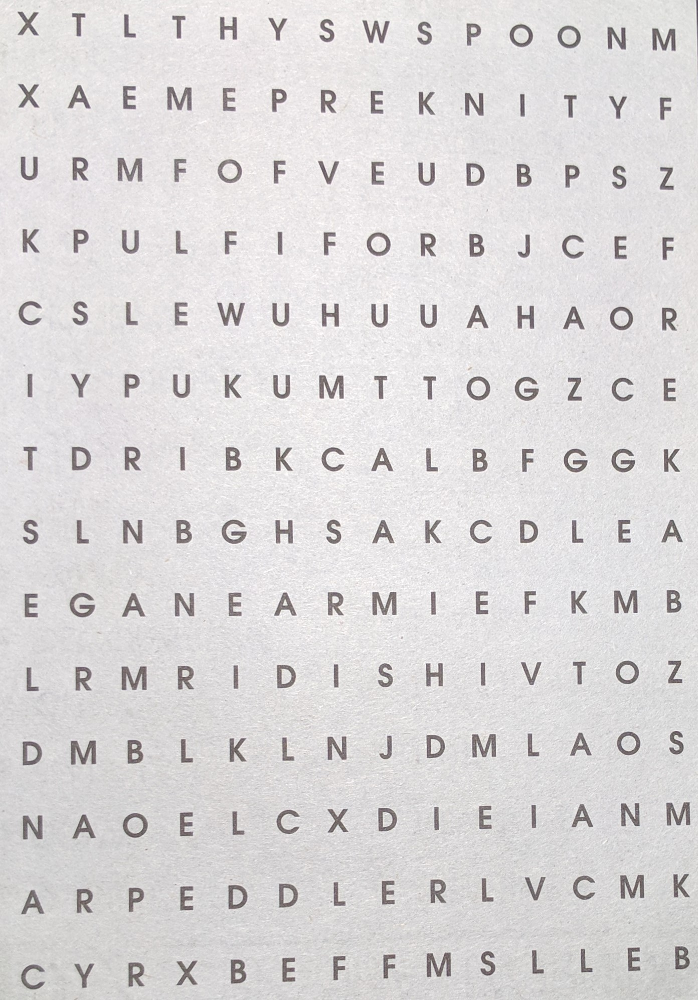
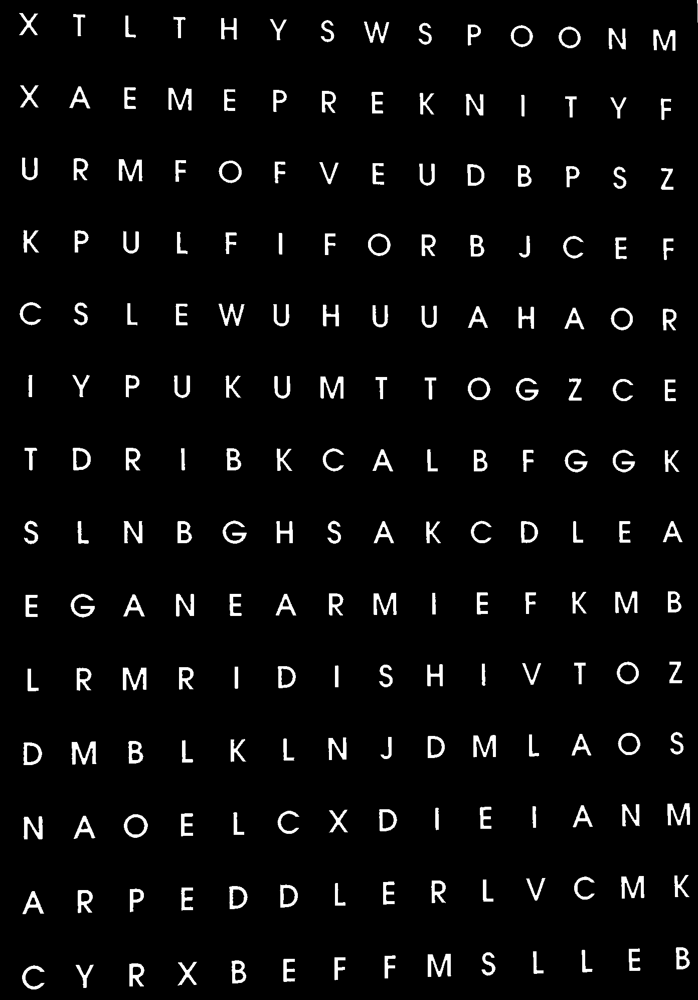
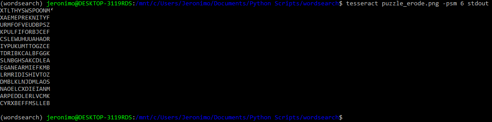

Having finished the fall semester I wanted to do a fun little project to relax. I have a 3D printer and I figured I could use it to do something interesting. I had some word search puzzles so I figured I could write some software to solve the puzzles and then create gcode so my 3D printer could circle the words if I attached a sharpie to it. It took me a few days but I got it working. There are a few changes I'd like to make in the future so this is likely a work in progress.
In order to extract the letters from the pages, I needed to use some kind of character recognition software. Luckily, I stumbled upon Tesseract OCR. Tesseract OCR is character recognition software that was originally developed by HP and then managed by Google. Out of the box, it has fairly strong performance so I decided that using it was preferable to training my own model. It CAN be quite fragile, but I didn't want to optimize it for my particular puzzle so I just made sure to pre-process and make sure my pictures had optimal lighting.
For both pictures (search words and puzzle), I made sure they were aligned vertically. This can be automated by using OpenCV but I did it manually. I also cropped the picture so only the words and letters of interest were present. Stray lines and boxes seemed to harm performance. I used some code that I found online to do thresholding and erosion of the image so Tesseract could find the letters more easily.
|

|

|
|

|
Describe what you did in Part 2. Show your result here. Explain any bugs you had to work through, with pictures if possible. Explain any special optimizations you did beyond simple bounding box triangle rasterization, with a timing comparison table (we suggest using the c++ clock() function around the svg.draw() command in DrawRend::redraw() to compare millisecond timings with your various optimizations off and on).
Here is an example table. You could put timing comparisons here, for example.
|
Row 1, Col 1 |
Row 1, Col 2 |
Row 1, Col 3 |
|
Row 2, Col 1 |
Row 2, Col 2 |
Row 2, Col 3 |